State of GRASS
FOSS4G North America 2026
Sacramento, CA · November 2026
Corey T. White, Ph.D. Center for Geospatial Analytics, North Carolina State UniversityOpenPlains Inc.
Corey T. White
- Geospatial Research Software Engineer, Center for Geospatial Analytics, NC State
- Founder & CEO, OpenPlains Inc.
- GRASS maintainer
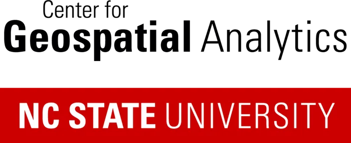
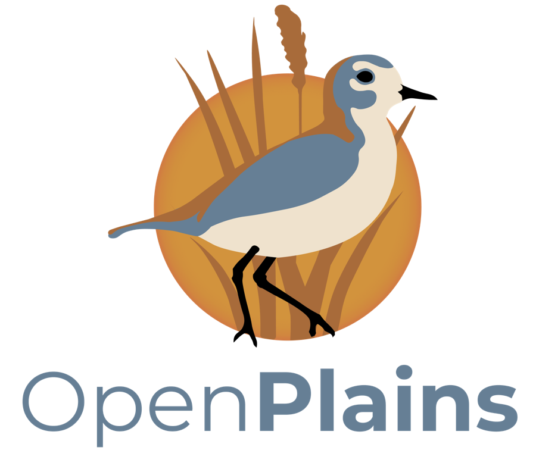
What is GRASS
An open-source geospatial processing engine for raster, vector, 3D, imagery, and time series
GRASS explainer, 30 seconds
Release status
Requirements now: GDAL 3.7+, PROJ 9.0+, C++17, Python 3.10+.
Python API: grass.tools
- Tools as native Python functions
- Direct NumPy array and raster pack I/O
- Smart return values, proper exceptions
- RegionManager and MaskManager context managers in grass.script
by Václav Petráš and Anna Petrášová, with Natrx · NSF SBIR #2322073
import numpy as np
from grass.tools import Tools
tools = Tools()
tools.g_region(raster="elevation")
tools.r_slope_aspect(
elevation="elevation",
slope="slope",
)
stats = tools.r_univar(
map="slope", format="json"
)
print(stats["mean"])
array = tools.r_mapcalc_simple(
expression="A * 2", a="slope",
output=np.array,
)
JSON for text outputs
format="json" in dozens of tools, nearly everywhere a tool prints text
Led by Anna Petrášová, Václav Petráš, Corey White, Edouard Choinière, Nicklas Larsson, Markus Metz · GSoC: Nishant Bansal, Kriti Birda
$ r.univar map=elevation format=json
import grass.script as gs
data = gs.parse_command(
"v.db.select",
map="roadsmajor",
format="json",
)
for row in data["records"]:
print(row["ROAD_NAME"])
New documentation
- Rewritten in Markdown, rendered with MkDocs
- Synopsis and parameters three ways: command line, grass.tools, grass.script
- Better search and indexing, user and developer pages together
by Martin Landa, Markus Neteler, Corey White, Václav Petráš, Anna Petrášová and others
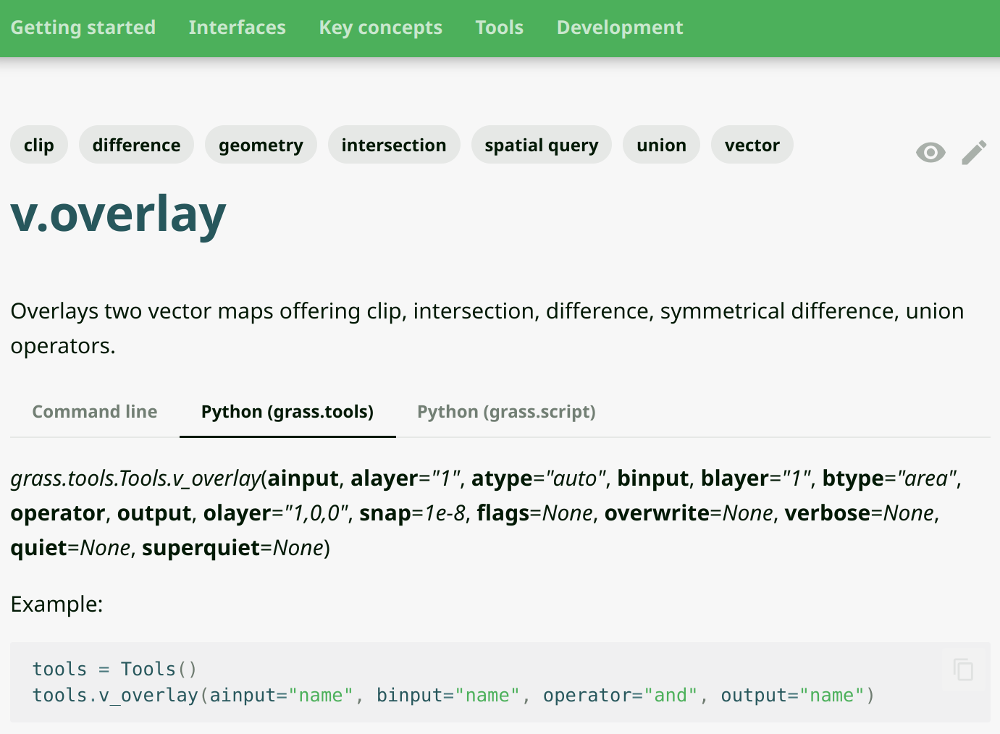
Parallelization and masks
Parallel by default
- r.mapcalc is parallelized; dependent tools benefit
- OpenMP in r.texture, r.horizon, v.surf.rst cross-validation
- nprocs added to r.blend, r.grow, r.mapcalc.simple, i.image.mosaic
- OpenMP tools now default to all available cores
Multiple masks per mapset
- Masks driven by GRASS_MASK, so concurrent masks work in one mapset
- Required changes in the C libraries; benefits every interface
- New r.mask.status reports mask presence
with gs.MaskManager(mask_name="lakes"):
tools.r_univar(map="elevation")
Build and install: CMake, MSVC, conda-forge
conda install -c conda-forge grass
Led by Huidae Cho and Nicklas Larsson, building on initial work by Rashad Kanavath · NSF POSE #2303651
grass.jupyter and GUI
- InteractiveMap: query button, drawing simple geometries, interactive region updates
- Parallel TimeSeriesMap and SeriesMap; Map3D.save()
- GUI: add projects in the Data Catalog, dockable Python editor, copy from command history
- Coming in 8.6: Jupyter notebooks inside the GUI
GUI work by Martin Landa, Tomáš Zigo, Ondřej Pešek, Anna Petrášová, Linda Karlovská and others
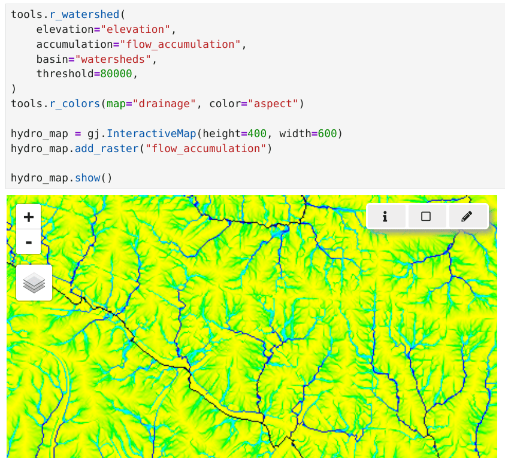
Addons: r.dem toolset
Ten tools for DEM co-registration, differencing, and uncertainty
- Co-registration: r.dem.coregister, r.dem.icp, r.dem.nk
- Change: r.dem.dod, r.dem.change, r.dem.screen
- Uncertainty: r.dem.lod, r.dem.errprop, r.dem.bias, r.dem.stats
by Corey T. White, OpenPlains Inc. and Center for Geospatial Analytics
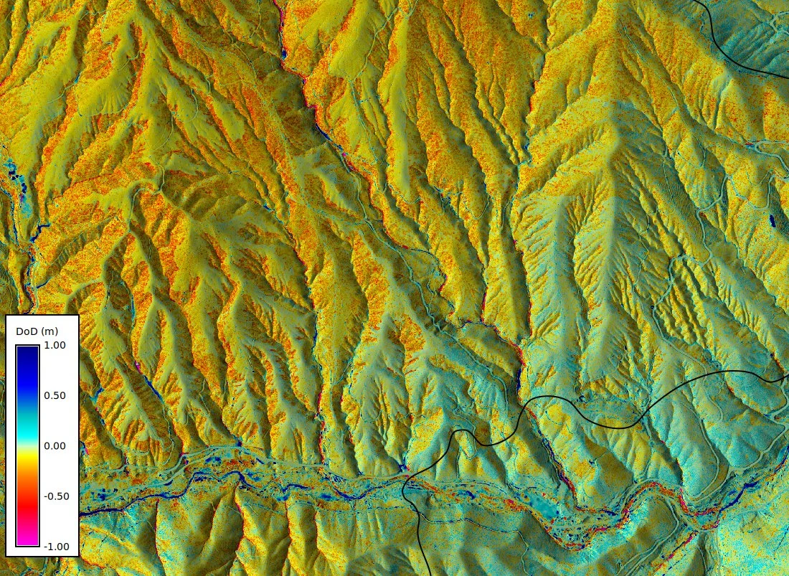
Addons: i.hyper hyperspectral toolset
Import, correct, resample, explore, and export hyperspectral 3D rasters
- i.hyper.import · i.hyper.atcorr 6SV2.1 atmospheric correction
- i.hyper.specresamp · i.hyper.composite · i.hyper.explore
- i.hyper.export to GeoTIFF, HDF5, Zarr · PRISMA, EnMAP, Tanager import · EMIT in progress
by Alen Mangafić and Tomaž Žagar, Geodetic Institute of Slovenia
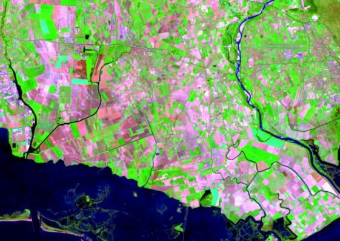
Addons: terrain modeling
Shape, flatten, and print terrain
- r.earthworks cut-and-fill landform modeling
- r.hydro.flatten water-surface elevations for hydro-flattened DEMs
- r.out.3mf export DEMs to 3MF or STL for 3D printing
- r.slopeunits
by Brendan Harmon, Anna Petrášová, Václav Petráš, Corey T. White, Ivan Marchesini, Massimiliano Alvioli and others
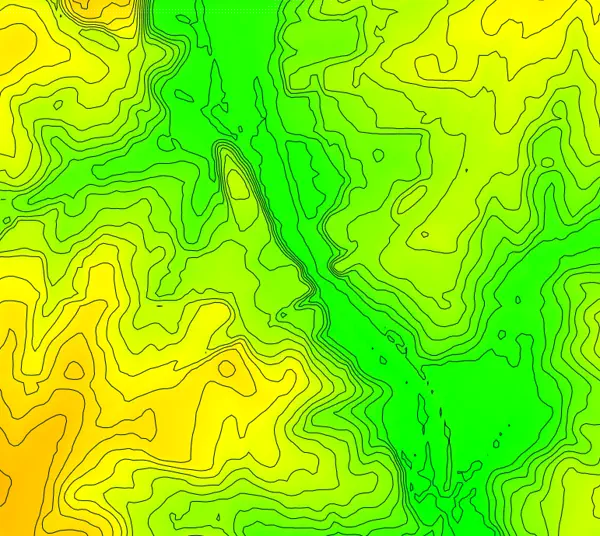
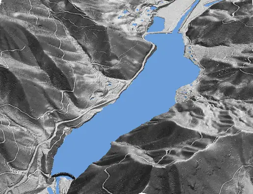
Addons: hydrology
Event runoff, flood extent, and parallel watershed analysis
- r.curvenumber → r.runoff → r.timeofconcentration SCS-CN chain
- r.noaa.atlas14 precipitation-frequency inputs · r.manning roughness
- r.hand height above nearest drainage and inundation
- r.hydrobasin, r.lfp, r.upflowlength memory-efficient parallel algorithms
by Abdullah Azzam, Huidae Cho, Anna Petrášová, Corey White
r.sim.water improvements
SIMWE overland flow and sediment transport, corrected for parallel runs
- Broken nblock auto-split disabled; flagged as errata #7358
- Parallel runs no longer skip walkers #7964
- Water depth accumulated atomically; parallel runs had been losing 12–14% of water #7974
- New pytest coverage with synthetic data; per-walker random numbers make results order-independent
by Václav Petráš and Anna Petrášová · shipping in GRASS 8.6
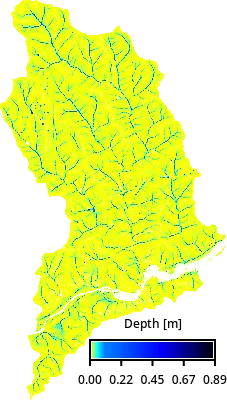
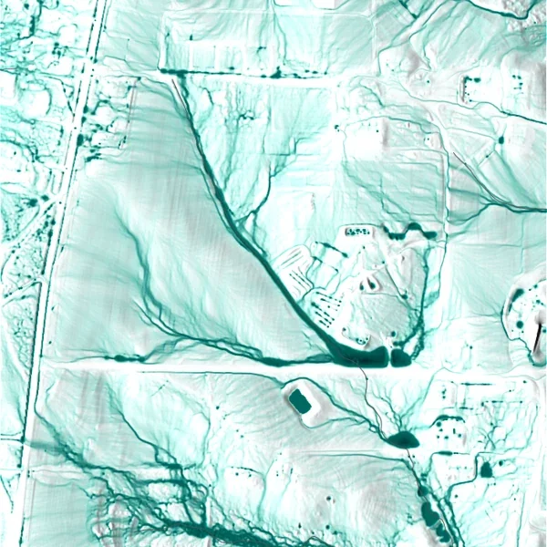
Tutorial figures © GRASS Development Team, CC-BY-SA 4.0
Addons: imagery and data access
Segment, mask, and pull data straight into a project
- i.sam2 text-prompt segmentation with SamGeo · i.omnicloudmask cloud and shadow masks
- t.stac browse and ingest STAC items, collections, catalogs
- i.eodag search and download Earth observation data from many providers through EODAG
- r.in.ssurgo USDA soils · r.in.ahn.laz Dutch LiDAR · v.in.ags
- r.colors.qml and r.colors.toqml swap styles with QGIS
by Corey White, Paulo van Breugel, Luca Delucchi, Hamed Elgizery, Veronica Andreo, Stefan Blumentrath and others
Ecosystem: R and xarray
Community
Community by the numbers
Top 2025 committers, per the Annual Report: Edouard Choinière (205), Shubham Desai (155), Václav Petráš (144), Anna Petrášová (91), Nicklas Larsson (90)
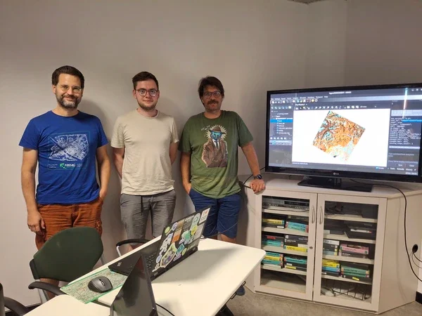
Developer Summit 2025 and Community Meeting 2026
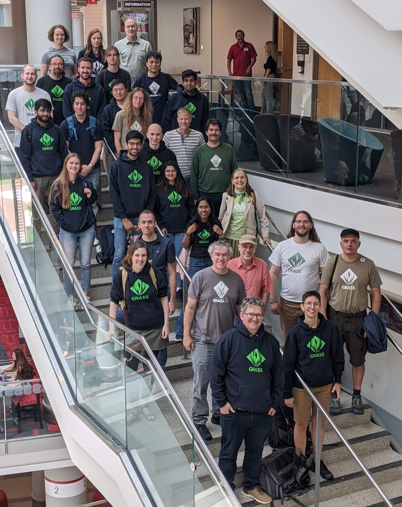
Raleigh, NC · May 19–24, 2025
30+ contributors, six days at NC State. Hyperspectral, xarray backend, Jupyter in the GUI, conda, CMake, tutorials.
Funding: NSF #2303651, Bohannan Huston, Inc., Center for Geospatial Analytics
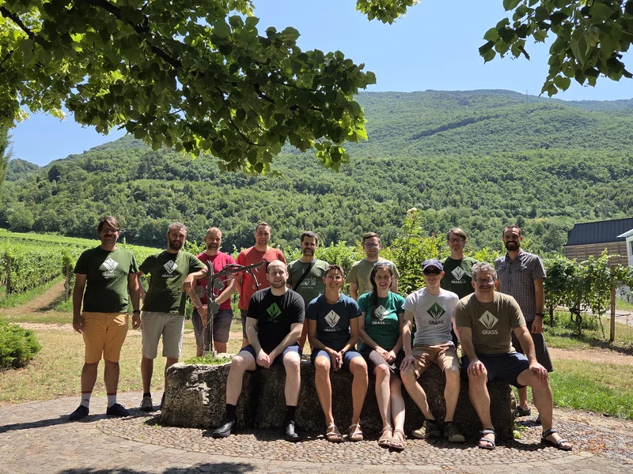
San Michele all'Adige, Italy · July 11–19, 2026
139 PRs opened, 144 closed in nine days. 5 first-time contributors. Jupyter-in-GUI merged for 8.6.
Funding: OSGeo, Bohannan Huston, Inc., FOSSGIS e.V. · Host: Fondazione Edmund Mach · Organizer: Luca Delucchi
Google Summer of Code 2026
Both projects finished successfully with more than 30 merged pull requests, in GRASS's first year under the NumFOCUS umbrella
AI-assisted contributions
We look forward [...] to welcoming new contributors, including those who make careful and responsible use of generative AI.
GRASS Annual Report 2025
- AI tools may be used; every contribution must meet GRASS quality standards regardless of how it was created
- Test it, understand it, describe it in your own words, and take responsibility for it
- Disclose AI assistance for substantial generated logic or when licensing is unclear
- Closed without review: untested code, verbose AI-generated descriptions, no understanding of the submission
- OSGeo/grass-mcp: a Model Context Protocol server for GRASS, started October 2026, early and open for contributors
github.com/OSGeo/grass/blob/main/CONTRIBUTING.md · AI use policy
Governance
PSC elections 2026
- Nominations: Sep 28 – Oct 19 · Candidate statements: Oct 19 – 26
- Voting: Nov 2 – 9 · Results announced by Nov 14
- Chief Return Officer: Hernán De Angelis
Voting is open this week. If you have contributed to GRASS, check your inbox for a ballot.
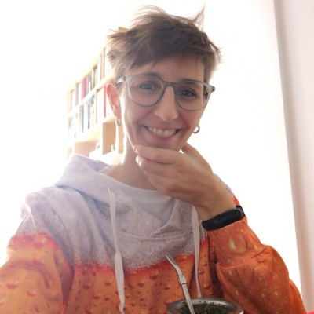
Verónica Andreo Corey White
Corey WhiteMarkus Neteler steps down from the PSC
After almost two decades on the PSC, I have decided not to stand for re-election and to step down from the PSC at the end of this term.
Markus remains active in the project and will keep contributing and supporting the community. Thank you, Markus.
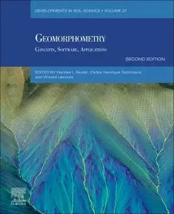
Geomorphometry, 2nd edition
Concepts, Software, Applications · Elsevier, September 2026
- Chapter 12: Geomorphometry in GRASS. Getting started, scripting, limitations, and future direction
- Chapter authors: Corey T. White, Helena Mitasova, Markus Neteler, Anna Petrasova, Jaroslav Hofierka
- Editors: Hannes I. Reuter, Carlos H. Grohmann, Vincent Lecours · Developments in Soil Science, vol. 37
- Companion talk: Geomorphometry with GRASS, ISG Coffee Talk, April 2026 · doi.org/10.5281/zenodo.19403683
Publications over the past year
For the long term
- Invest your time in technologies that stay and don't disappear in a couple of years
- Shell scripting, Python, GRASS: longevity, open source, platform independent
- Versions update and features are added, but the general ideas stay the same
r.mapcalc depr.bin="if((elev - fill)< 0., 1, 0)"although there is a better way to write it:
r.mapcalc "depr_bin = if((elev - fill) < 0., 1, 0)"
Funding and sponsors
Grants and companies
- NSF POSE #2303651, led by NC State: infrastructure, guidelines, community
- NSF SBIR #2322073, led by Natrx: grass.tools Python API
- Bohannan Huston, Inc. · mundialis · OpenPlains Inc. · FOSSGIS e.V. · OSGeo · individual donors
Grants fund infrastructure and new capabilities, not ongoing maintenance.
NumFOCUS fiscal sponsorship
- GRASS is an OSGeo Project and a NumFOCUS Fiscally Sponsored Project
- Invoicing for corporate sponsors; first invoice created and paid in 2025
- Goal: a budget that directly supports ongoing maintenance
Cesium Ecosystem Grant
Bringing 3D Tiles to GRASS through grass.jupyter
- Native OGC 3D Tiles 1.1 export: r.out.3dtiles, v.out.3dtiles, r3.out.3dtiles
- Map3DTiles in grass.jupyter: interactive 3D analysis results in a notebook cell, Colab included
- Tilesets open in CesiumJS, QGIS, deck.gl, and Three.js; validated in CI with the 3D Tiles and glTF validators
- Lands in GRASS core under the project's review, CI, and release process
Awarded to the Center for Geospatial Analytics, NC State · Corey T. White (lead), Anna Petrasova, Vaclav Petras
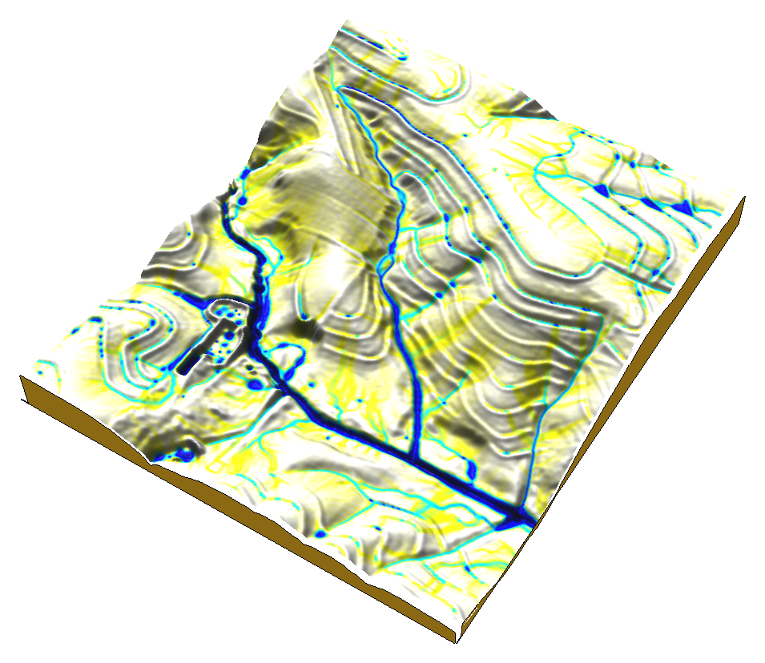
r.sim.water overland flow depth on 3D terrain in CesiumJS, the one-off pipeline this grant turns into a supported workflow
Roadmap: GRASS 8.6 and beyond
In progress for 8.6
- Jupyter notebooks inside the GUI (merged)
- Test suite migration from gunittest to pytest
- Windows installer built in GitHub Actions; addons compiling on Windows CI
- SBOM (CycloneDX) and SPDX license headers for supply-chain transparency
- More parallel tools: r.param.scale, r.geomorphon
- Reproducible random numbers for parallel tools: one seed, same result at any thread count
Beyond 8.6
- OGC 3D Tiles export and grass.jupyter Map3DTiles, funded by the Cesium Ecosystem Grant
- Needs new funding
- Subcommand interfaces
- No-project processing
- Sustained maintenance of conda, CMake, and Windows packaging
Sources: Community Meeting 2026 report · Annual Report 2025
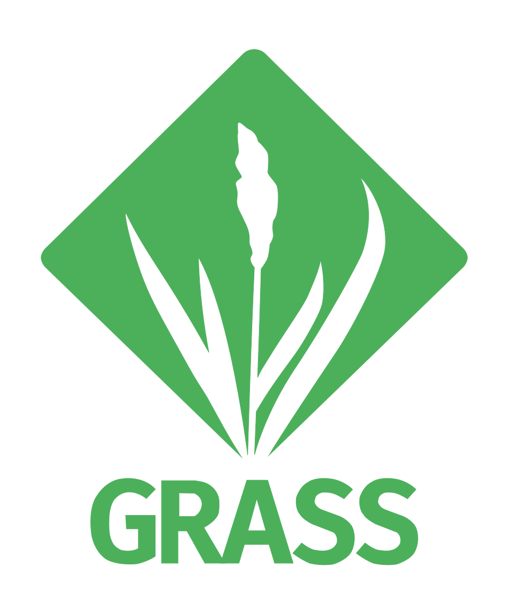